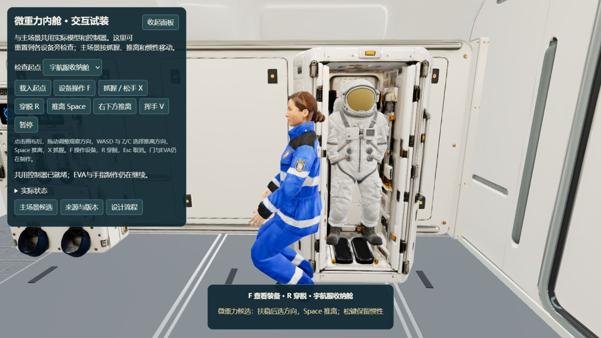

这是实际原件截图与二维范围说明。当前柜体以敞开形态生成，未找到可覆盖正面开口的完整门叶，只有一个混合网格；已有“柜门分件/局部封边”授权不等于新增整扇柜门。本页没有生成或修改三维模型。

左右两组双折柜门，共四片薄门板和必要门轴、局部封边。每侧闭合覆盖宽约47厘米、高不超过2.05米；门板厚不超过1.6厘米，向通道的活动范围不超过28厘米。最终尺寸只在原开口内校准。
保留现有柜体、柜内宇航服、舱内人物、船壳、地板与气闸/外门，不扩展成新舱室。另存本地候选，补开合、人物/门碰撞与暂停重载检查；尺寸说明不代替视觉验收。
此前规则要求：“未经用户明确授权自主建模，任何 AI 执行者不得自行制作、重建或修改三维模型几何。”当前新增四片门板超出来源分件，须明确授权后制作；穿戴和既有气闸/系留代码检查可继续。